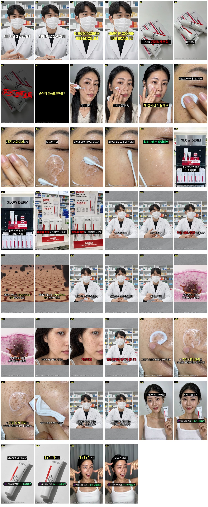
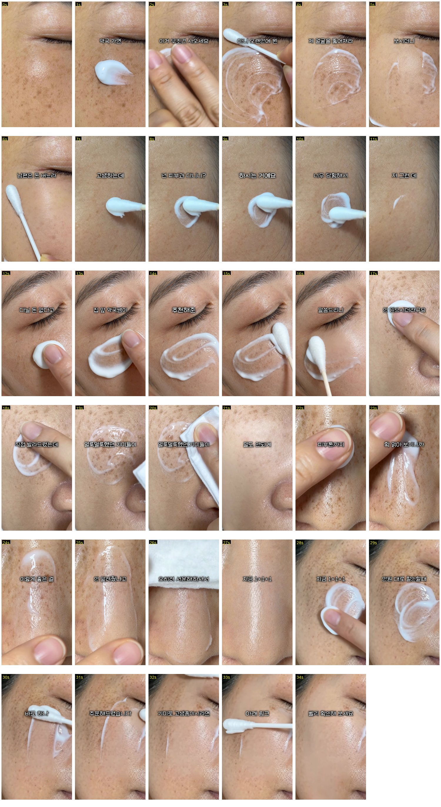
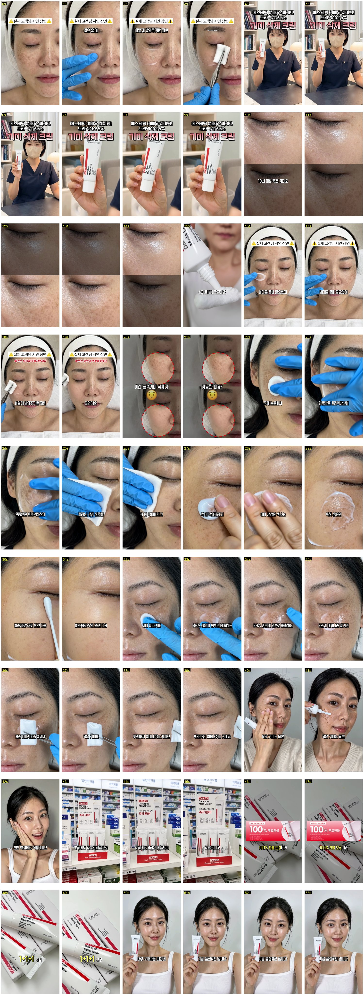
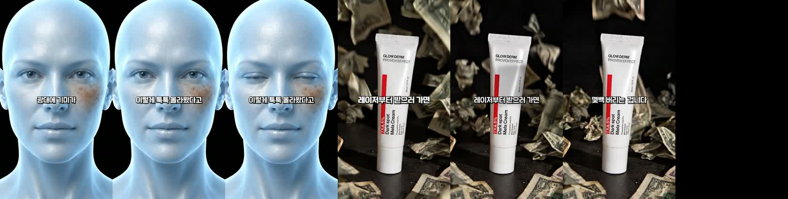
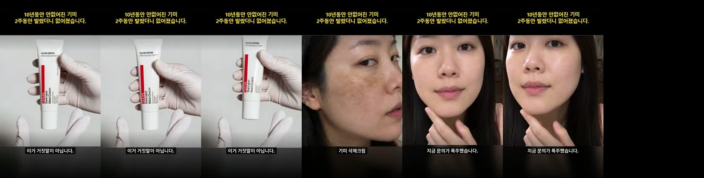
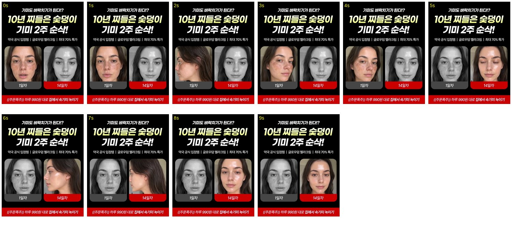

전문가 설명형
전문가 등장 → 원인 설명 → 시연 → 제품 안내
CCFM 판매종료 약사후킹 · 전체 전개 분석 있음
GLOWDERM / 소재 운영
멜라크림전문가 설명형 안에 강한 키워드·비포애프터·면봉 시연
클렌저화장 들뜸 전후 · 롤링과 세안 장면을 촬영
일정하루 1편은 목표 · 담당 배정과 납기는 미확정
| # | 말한 것 | 결과 | 상태 |
|---|---|---|---|
| 1 | 키워드 쓰는 타사 기미 메타 광고 찾기 | 광고 라이브러리 19개 검색어, 56묶음(약 75건). ACIS 원장 뷰티 14탭 31,221편 키워드 매칭 | 완료 |
| 2 | CCFM이랑 우리 비교해서 안 한 것 | 안 한 것 후보 22건 · 일부 근거 재확인 필요 | 완료 |
| 3 | 비포애프터를 어떻게 보여줄지, 어떤 키워드를 쓸지 | 비포애프터 11유형과 키워드 짝 | 완료 |
| 4 | 성과 잘 나온 건 계속 넣고 배리에이션 | 승자 유지와 변수 하나씩 바꾸는 규칙, 첫 파생은 05 초반 0~3초 3편 | 규칙 확정 |
| 5 | 주 1편에서 하루 1편으로 | 10/13~10/26 일정. 팀 합산 하루 1편으로 해석 | 해석 확인 필요 |
| 6 | 아스트라·opus로 내가 만드는 영상도 | 트랙 C. 시나리오 4·7·11·12와 제품 시작형 광고의 이전 파생안을 맡김 | 반영 |
| 7 | 메타 성과 리뷰, 앞으로 계속 | 매일 오전 리뷰 슬롯. 10/12 완결분 리뷰 진행 중 | 진행 중 |
| 8 | 4개 팔린 건 상단 고정 텍스트 때문 같다 | 판정 불가. 이전 조회에서 05에 예산이 집중돼서 문구 효과와 예산 효과가 섞임. 검증안은 테스트에 | 검증안 |
| 9 | 초반 0~3초 후킹률이 중요한 것 같다 | 올리는 레버 7개와 오프닝 시안 10개. 다만 생존자 편향 위험이 있어 ROAS 예측에는 안 씀 | 완료 |
| 10 | 클렌저도 메타로, 리터니티 참고해 4축(화이트헤드·화잘먹·오돌토돌·각질) | 클렌저 탭: 리터니티 52건 분석, 백로그 5편 | 완료 |
기존 날짜는 1차본 목표일로 통일했습니다. 업로드는 다음 영업일 검수·수정 후 목표이며, 담당 배정·실제 완료 여부는 확인 전입니다.
| 1차본 목표 | 트랙 | 편 | 키워드 · 비포애프터 | 대본 | 전달 기한 | 검수 후 업로드 목표 |
|---|---|---|---|---|---|---|
| 10/13 화 | A | 시나리오_8 "피부 선생님 그만 만나셔도 돼요" | 3·5 · 장갑 시술 컷 + 날짜 카드 + 환불 카드 | 기존 | 10/12 | 10/14 수 · 목표 |
| 10/13 화 | C | 시나리오_4(메디옥실 949652) v15 마무리 · 제품 시작형 광고-H1·H2·H3·C | 4·5 · "고소하세요" 보증 / 초반 0~3초만 | 제작 중 | — | 10/14 수 · 목표 |
| 10/14 수 | B | 시나리오_10 클렌저 | 클렌저1·4 · 밀림 시연 + 마스크 관리사 VO | 기존 | 10/13 | 10/15 목 · 목표 |
| 10/15 목 | A | 신규 #1 지우개 | 1·5 · 0초 기미 얼굴 → 면봉 절반 소거 + "피부과 다니냐" 자막 + 지우개 비유 | 신규 | 10/14 | 10/16 금 · 목표 |
| 10/15 목 | C | 시나리오_12 v1 검수 · 시나리오_7 v6 마무리 | 3 · 레이저 vs 크림 + "-10살" 헤드라인 | 영상 있음 | — | 10/16 금 · 목표 |
| 10/16 금 | B | 신규 #3 미니어처 공사 | 1 · CG 은유, 4~6초 제품 단독 컷 | 신규 | 10/15 | 10/19 월 · 목표 |
| 10/19 월 | A | 신규 #9 관리 베드 | 4 · 관리 베드 시연 + 댓글 키워드 CTA (D-2 소스 시험 실패 시 예비로 교체) | 신규 | 10/16 | 10/20 화 · 목표 |
| 10/19 월 | C | 시나리오_11 마무리 | 가격 반전 · 약국 입점 카드 | 제작 중 | — | 10/20 화 · 목표 |
| 10/20 화 | B | 신규 #4 UV 세안 | 클렌저1·3 · UV 카메라 전후 | 신규 | 10/19 | 10/21 수 · 목표 |
| 10/21 수 | A | 시나리오_13 모녀 자막형 | 1 · 제3자 반응(가상 모녀) | 기존 | 10/20 | 10/22 목 · 목표 |
| 10/22 목 | B | 신규 #8 스킨부스터 1분 세안 | 클렌저2·3 · 앰플 포지셔닝(수량 환산 없이) | 신규 | 10/21 | 10/23 금 · 목표 |
| 10/23 금 | A | 시나리오_9 각색(마스크 원장) | 4 · 원장 화자 + 도포 소거 | 기존 | 10/22 | 10/26 월 · 목표 |
| 10/26 월 | B | 신규 #10 야외 자외선 | 공통 · 가을 등산(여성 단독) → 광대 기미 | 신규 | 10/23 | 10/27 화 · 목표 |
| 다음 BX 클렌저 슬롯 | B | 클렌저 백로그 1 쿠션 들뜸 또는 2 요철 쓸기 후보 · 일정 미확정 | B+D / C+D · 고마쥬 밀림 증명 | 신규 | — | 미정 |
| 2주차 | C | 승자 배리에이션 | 매일 리뷰에서 고른 변수 하나 | — | — | 미정 |
시나리오_4·7·11·12를 C로 옮긴 건 로컬 작업 폴더(mediox7 v15, scenario7 v6, 키워드시나리오 v1_11·v1_12)를 근거로 한 판단입니다. 웹디 시트에 시나리오_4 탭이 있어서, 웹디에 이미 넘겼다면 알려주세요. 신규 대본 6편(#1·3·4·8·9·10)은 10/13~10/22에 써야 합니다. 시나리오 한 편 쓰는 시간은 실측이 없어서, 이게 하루를 넘기면 제가 병목이 됩니다.
대본·소스 확정
담당 채널 스레드에 전달
소스 사전 체크
1차본 전달
검수 피드백 1회 정리
수정·안전영역 확인 후 업로드
성과 확인 → 다음 변경점 1개
| 항목 | 실측 | 목표 | 차이 |
|---|---|---|---|
| 웹디 1차본까지 | 영업일 2~4일 | 1일 | 2~4일 → 1일 목표 · 실현 미확인 |
| 웹디 처리량 | 0.25~0.33편/일 | 0.5편/일 | 1.5~2배 |
| BX 처리량 | 1편/27일 | 0.5편/일 | 단일 사례·달력일 기준. 처리량 배수 환산 불가 |
| 피드백 왕복 | S3 3회 | 2회 | 소스 1 + 편집 1 |
| 시나리오 버퍼 | 기존 대본 4·7·8·9·10·13 | 3편 이상 | 1주차는 충분, 10/15부터 매일 1편 신규 필요 |
BX 리스크 대응: 10/14 BX 1차본이 18시까지 안 오면 대사 없는 CG 편(#3·#8)을 웹디로 넘기고 C 트랙이 빈 날을 메웁니다. TTS는 9/29 아스트라 결제 막힘 기록이 있어, 보이스오버 편(S8·S10·#9)의 음성 도구를 미리 정해 두는 게 좋습니다.
비교기간·노출 조건·지표 정의를 맞춘 뒤 비교
판정구매·CPA·ROAS 함께 확인 · 표본 부족은 보류
실험안동일 예산 비교·3일 중간 점검은 제안 · 집행 확정 아님
판정은 2단계로 합니다. 1단계는 후킹률이고 같은 기간·지표·노출 조건에서 비교합니다. 노출 1,000회만으로 차이가 확정되지는 않습니다. 구매·ROAS는 모든 편에서 함께 확인합니다. 후킹률만으로 탈락시키지 않습니다.
| 광고 | 누적 지출 | 구매 | ROAS | 10/12 지출 | 후크 비율 | CPM 누적 / 10/12 |
|---|---|---|---|---|---|---|
| 05 피캄연습5 v8 | ₩191,212 | 4 | 1.00 → 0.89 | ₩20,755 | 20% | ₩64,533 / ₩64,059 |
| 03 BX 시나리오1 | ₩29,247 | 0 → 1 | 1.54 | ₩12,087 | 29% | ₩66,622 / ₩52,325 |
| 04 BX 0929 | ₩8,455 | 0 | — | ₩6,863 | 31% | ₩101,867 / ₩137,260 |
| 02 웹디 시나리오2 | ₩8,308 | 0 | — | ₩3,555 | 26% | ₩76,926 / ₩77,283 |
| 캠페인 전체 (표시 외 포함) | ₩273,966 | 5 | 약 0.79(계산) | ₩43,260(계산) | ₩67,546 / ₩66,452(계산) |
10/12 표는 과거 조회값입니다. 표시된 4개 소재 합계와 캠페인 전체 합계는 범위가 다릅니다. 실시간 성과가 아닙니다.
큰 틀영상 전체를 어떻게 끌고 가나 · 대소구
설득 재료왜 믿고 사야 하나 · 중소구
한 줄 표현어떤 말로 세게 전달하나 · 소소구
화면 배치상단·하단, 고정·교체, 대사·자막
전문가 설명 중 한 구간이면 중소구 · 영상 전체가 레이저 vs 크림의 비용·방법·결과 비교면 대소구
환불 예시환불을 걸고 검증하는 전체 이야기 = 큰 틀 / 마지막 환불 카드 = 설득 재료 / “100%” = 한 줄 표현 / 상단 고정 = 화면 배치
분류는 이 작업의 제작 기준입니다. 이미지 한 장으로 전체 영상의 포맷을 확정하지 않습니다.

전문가 등장 → 원인 설명 → 시연 → 제품 안내
CCFM 판매종료 약사후킹 · 전체 전개 분석 있음

내 기미 고민 → 써본 과정 → 변화 → 추천
메디큐브 사례 · 시작 캡처만 확인

주변 사람이 먼저 알아봄 → 이유 → 시연 → 추천
CCFM 어머님 · 전체 전개 분석 있음

피부 접사 → 도포·닦기 → 비교 → 설명
CCFM 관리받는구도 · 전체 전개 분석 있음

레이저 비용·방법·결과와 크림을 비교
메라블 이미지 확인 · 전체 비교 영상은 구성안

개발 이유 → 제품 설명 → 사용 장면 → 추천
누룩밤 사례 · 개발자 소개 캡처 확인

문제 → 피부 속 원리 → 제품 작용 → 시연
CCFM 파란인물 · 초반 캡처 확인
비포애프터 · 절반만 닦기 · 같은 얼굴 비교
레이저 비용·통증·반복 방문 vs 홈케어
100% 환불 · 돈 돌려드림 · 무료체험
안 없어지면 고소하세요 · 전재산 보증
전문가 경력 · 개발자 · 연구 이야기
멜라닌 생성·배출 설명 · 피부 단면 CG
트라넥삼산 5% · 농도·함량
피부과 다니냐 · 시술했냐 · 달라졌다는 반응
40·50대 · 출산 후 · 등산·자외선 상황
1주·2주 · 날짜 카드 · 사용 기간
할인 · 1+1+1 · 판매 종료·마감
지우개 · 와이퍼 · 바르는 레이저
위 목록은 분류 도감입니다. 사용 확인·위닝 여부는 아래 실제 사례와 별도로 봅니다. 면봉은 비포애프터를 보여주는 구체적인 시연 도구입니다.

아무아 100% 환불 보장!
공식 판매 페이지 문구 · 영상 위치·집행 성과는 미확인
공식 페이지 ↗
✅ 기미 개선 119% 임상 증명 ✅ 방송 속 레시피 그대로 ✅ 효과없으면 100% 환불 보장
공식 판매 페이지 문구 · 영상 위치·집행 성과는 미확인
공식 페이지 ↗
불만족 시 100% 환불 보장 제품
공식 판매 페이지 문구 · 영상 위치·집행 성과는 미확인
공식 페이지 ↗
원본은 메디옥실 여드름 광고입니다. 기미 광고의 동일 문구 사례로 바꿔 적지 않았습니다.
0~2초에 큰 자막 · 3초부터 대사 자막으로 교체 · 우리 기미 제작안에 각색된 문구는 별도

같은 상단 약속 문구를 유지하고 아래 대사만 바꿈

0~9초: 상단 결과 문구 + 가운데 전후 + 하단 빨간 가격 띠 유지
0~6초 상단 제목 유지 → 전후·시연으로 전환

실제 44초 환불 카드 · 전 구간 고정과 다름
0~2초 도발 문구 → 3초부터 설명 자막
확인 구간을 적었습니다. 가격·보증을 하단에 영상 끝까지 고정한 기미 사례는 별도 캡처 검증 전입니다.
기본형전문가 설명 + 강한 키워드 + 도포·면봉 + 같은 얼굴 전후
비교형전문가 설명 + 레이저 비교 + 도포·면봉 + 전후
보증형전문가 설명 + 도포·면봉 + 전후 + 마지막 보증 카드
자막 비교같은 영상에 상단 고정 문구 유무만 바꾸기
보증 문구의 위치·유지 시간은 별도 변수로 비교합니다. 여러 요소를 한 번에 바꾸지 않습니다.
기존 광고 원장 22,985행을 검색해 기미·색소침착 언급과 장면 설명이 있는 107건을 선별했습니다. 색소침착 인접 제품도 포함되며, 현재 집행 중인 전체 광고를 새로 전수 수집한 것은 아닙니다.
기존 10/12 타사 자료와 10/8 CCFM 장면·성과 자료, 공식 판매 페이지의 환불 문구를 대조했습니다.
원본 영상 요청이 실패한 5건과 영상 주소가 없는 3건은 추가 캡처를 확보하지 못했습니다. 확보 못 한 이미지를 다른 사례로 대체하지 않았습니다.
초반 0~3초에 얼굴·첫 문장 → 시연 중에도 설명 연결 → 마지막까지 같은 화자
첫 문장·상단 자막
같은 얼굴·구도 비교
비포애프터 안의 고정 시연
채택한 방향: 전문가 포맷은 큰 주제, 키워드·비포애프터·면봉 시연은 영상에 넣을 소구 요소
CCFM 기존 광고 캡처 · 전문가가 얼굴을 보이며 직접 말하는 구성 참고
아래는 실제 타사 광고 문구 · 오른쪽은 우리 영상에 연결할 구성안

초수는 제작 초안 · 전문가는 시작부터 등장하고, 시연 위에도 같은 화자의 설명을 이어갑니다
질문·결과 키워드 하나로 시작 · 상단 자막도 같은 주제
얼굴·조명·구도 고정 · 닦을 부위를 보여주기
한 컷으로 과정을 연결 · 닦인 쪽과 안 닦인 쪽을 함께 남기기
직전 장면을 되짚거나 같은 구도 분할 · 면봉 시연 결과와 연결
성분·사용법 등 이번 편의 메시지 하나만 설명
실제 판매 조건과 링크 안내 · 전문가가 마무리
기미 부위 보여주기 → 크림 바르기 → 면봉으로 닦기 → 같은 얼굴에서 차이 비교
아래는 기존 CCFM 시연 캡처 · 새 영상에도 이 흐름을 유지하고 전문가 설명을 이어 붙입니다


고정전문가 설명 + 비포애프터 + 면봉 시연
바꿀 것강한 키워드 또는 시연 위치 중 하나
첫 비교키워드만 다른 2편 · 시연 위치와 나머지 장면은 동일
화면에서 확인한 표현을 쉽게 다시 이름 붙였습니다. 시작일·일수는 2026.10.12 수집 기록 기준입니다.
메라블
기미 전후와 제품을 한 장에
우리 적용 전문가 설명 중 레이저 비교를 한 구간 넣기
시작 2025-10-14 · 집행 363일 · 이전부터 운영
광고 원문 ↗

도미나스
기미 전후 + 제품 + 수치 카드
우리 적용 중간 비교 컷을 짧고 한눈에 보이게
시작 2026-06-30 · 집행 104일 · 이전부터 운영
광고 원문 ↗

기존 목록 중 영상·이미지가 확보되지 않은 항목입니다. 메인 예시에서는 제외했습니다.
UV 카메라로 세안 전후 잔여물 보이기 · 캡처 미확보 / 시작일 미확인
특허 성분·제약사 업력 배지 · 캡처 미확보 / 시작일 미확인
미니어처 인부들이 피부 위에서 공사하듯 기미를 부숴 나름 · 캡처 미확보 / 시작일 미확인
3일·7일 단기 기간 타이포(7일 달력 OUT) · 캡처 미확보 / 시작일 미확인
"피부나이 -10살 / 10살 어려지기" 결과 카피 · 캡처 미확보 / 시작일 미확인
과거 위닝 편의 요소를 남겼습니다. 같은 계열의 실패 변형과 이후 성과 하락은 아래에서 별도로 확인합니다. 개별 요소만의 효과를 분리한 실험은 아닙니다.
어머님 계열 · 7/31~8/2 ROAS 239% · 구매 78건
크림 도포 → 면봉·솜 닦기 → 같은 부위 비교
어머님 계열 · 같은 위닝 영상의 서사
“피부과 다니냐” 같은 반응을 전문가 설명에 짧게 연결
관리받는구도 계열 · 8/28~30 ROAS 194% · 구매 21건
시연 뒤 CTA에 보증 문구 카드 배치
관리받는구도 계열 · 동일 기간 위닝 기록
전문가 설명과 장갑·도포·닦기 접사 연결
지우개 비유: 6/22 정리 · CTR 약 2.3%는 위닝 근거가 아님
직업군 이미지: 전환 0·높은 CPM으로 정리
야외활동: 영상별 구매 성과 미확인
클렌저 관리사: 소액·단기 성과, 정확한 파일 매핑 미확인
흑꿈치: 채택할 위닝 근거 미확인
어머님 ASC: 9월 ROAS 80%·60% 이후 OFF
관리받는구도: 9/17~18 ROAS 35%·83% 이후 OFF
어머님 변형: 9/21 ROAS 47%·구매 2건 이후 OFF
원칙: 0초는 기미가 있는 얼굴로 시작하고, 지워지는 과정은 1.6초 이후에 둡니다. 0~2초 안에 이미 깨끗해진 결과를 보여주면 볼 이유가 사라집니다(우리 01은 1.96초, 기존 제품 시작형 광고는 2.0초에 이미 깨끗한 얼굴. 확신도 낮음).
| 유형 | 어떻게 | 타사 | CCFM | 우리 |
|---|---|---|---|---|
| 도포 소거 | 면봉·장갑·솜이 지나간 줄만 옅어짐. 절반만 지워 비교선을 남김 | 메라블 골드필름 180일 | 위닝 핵심 | 0 |
| 밀림 시연(클렌저) | 팩을 두고 문지르면 각질이 때처럼 밀려 나옴. 3초 이하 컷 여러 개 | 파파레서피 105일 | 다수 | 0 |
| UV 카메라(클렌저) | UV 필터 화면에서 세안 전 잔여물 → 세안 후 사라짐 | 히디프 203일 | 0 | 0 |
| CG 은유 | 미니어처 인부가 기미를 부숨, 지우개가 지움, 골드필름이 기미 핵을 끌어올림 | 메라블 82일·180일 | 지우개만 | 0 |
| 레이저 vs 크림 비교 | 레이저 빔이 멈추고 크림 바른 손가락이 대신 지나감, 또는 토닝 10회 vs 크림 1통 분할 | 킹스파워 109일(카피) | 분할 0 | 대본만 |
| 날짜 카드 | Day 1 → Day 7 손글씨, 7일 달력 OUT. 오프닝보다는 중반에 | 이지듀 56일·피캄 64일 | 2주만 | 2주만 |
| 부위 비포애프터 | 팔꿈치·겨드랑이·목 접사 전후(쥐젖·흑꿈치) | 피캄 71일·피부연구소 144일 | 흑꿈치 | 0 |
| 제3자 반응 | 비포애프터를 직접 안 보여주고 "피부과 다니냐"는 반응으로 증명 | 확인 안 됨 | 어머님 212% | 0 |
| 분할 화면 | 좌우·상하 정지 전후 | 다수 | 성과 낮음 | 사용 |
| 3D 단면 | 멜라닌이 부서지고 빠져나가는 단면 애니 | 다수 | 사용 | 사용 |
| 숫자 결과 카피 | "피부나이 -10살", "10살 어려지기"를 결과 화면 위에 | 메라블 58일 | 0 | 0 |
CCFM에서 일자 라벨·카드뉴스·정방 분할·콜라주로 시작한 소재는 성과가 나빴거나 노출을 못 받았습니다. 날짜 카드와 분할은 중반 증거 컷으로 쓰고 오프닝에는 쓰지 않습니다.
| 키워드 묶음 | 멜라크림 비포애프터 | 필링팩클렌저 비포애프터 | 타사가 덜 쓴 키워드(ACIS 매칭 0~2건) |
|---|---|---|---|
| 1 피부 고민 | 도포 소거 + 지우개 은유, 결과에 "-10살" | 밀림 시연, 부위(쥐젖·흑꿈치) | 주근깨 지우기, 즉각 화이트닝, 기미가 때처럼 벗겨짐 |
| 2 고시 성분 | 3D 단면(성분이 스며드는 컷) | 앰플 포지셔닝 + 세안 접사 | 식약처 고시 미백성분(CCFM 미사용) |
| 3 시술 연상 | 레이저 vs 크림 한 컷 비교 | UV 카메라 전후 | 바르는 레이저(정확일치 0), 바르는 보톡스, 필러, 기미 치료, 코스메슈티컬 / 바르는 필링, 레이저 필링, MTS 없이 |
| 4 전문가·의료기관 | 관리 베드 시연(장갑 관리사) | 관리실 원장 + 밀림 시연 | 대학 공동연구, 원장님 추천, 피부과 전문의 개발 / 특허 필링 |
| 5 절대·즉시·비교 | 날짜 카드 7일 + 환불 카드 | 1회 시연 + 스크럽 비교 | 영구적, 완전 제거 / 각질 100%(CCFM 미사용) |
타사가 거의 안 쓴 키워드는 테스트 가치가 큽니다. 효과가 있으면 우리만 쓰는 무기가 되고, 없으면 왜 다들 안 쓰는지 확인하는 셈입니다.
올리는 건 맞지만, 후킹률이 높다고 잘 팔리는 건 아닙니다. CCFM이 후킹률을 보고한 소재는 120개 중 7건뿐입니다.
| CCFM 소재 | 슬랙 보고(정점 구간) 초반 0~3초 후킹률 | 슬랙 보고 결과 | 광고관리자 누적(6/1~10/11) 후크 비율 | 누적 ROAS |
|---|---|---|---|---|
| 어머님 | - | 정점 ROAS 212% | 44% | 1.56 |
| 판매종료(전문가후킹 8/10, 젊은 남성 초반 0~3초) | 50%+ | ROAS 223%, 지금까지 생존 | 60% | 1.53 |
| 관리받는구도(초반 0~3초) | - | ROAS 138% | 54% | 1.41 |
| 외국인 극찬 | 50%+ | 189~261% 후 다음 구간 123%로 정리 | 60% | 1.40 |
| 경고(초반 0~3초변경) | 40% | ROAS 117%, 구매 31 | 39% | 1.19 |
| 3D피부단면(클렌저) | 19% | ROAS 129%, 구매 4 | 18.2% (계산값) | 0.89 |
| 파란인물 | 50%대 | 298%(구매 1) 후 언급 사라짐 | 45% (노출 2,102) | 0.84 |
| 약사추천 | 30%대 | 구매 0, 정리 | - | - |
차이 원인 = 기간(정점 vs 누적)이 주원인입니다. 슬랙 일부는 어드민 매출 기준일 가능성이 있습니다(미확인).
| 기준선 | 1초 | 2초 | 3초 | 10초 |
|---|---|---|---|---|
| CCFM 위닝 4편 초별 유지율 평균(계산) | 85.5% | 62% | 54.5% | 27.2% |
우리 3초는 20~33%입니다. 패널 후크 비율은 01 33, 02 25, 03 29, 04 31, 05 20입니다.
우리 5편도 후크 비율 순서(01 > 04 > 03 > 02 > 05)와 구매(05 4건·03 1건(10/12 조회값))가 맞지 않습니다. 그래서 후킹률은 본문까지 오는 사람 수를 늘리는 1차 거름 지표로만 씁니다. CCFM "영상 유지율"은 메타 "지속 비율"과 다른 지표로 보여서 비교에서 뺐습니다(확신도 중).
| # | 레버 | 근거 | 확신도 |
|---|---|---|---|
| 1 | 0초는 사람 얼굴. 제품 단독 컷으로 열지 않음 | 기존 제품 시작형 광고는 0초 장갑+튜브에서 0→1초 −38%p(최대). 사람으로 연 01·02·04는 −12~−19%p. CCFM 50%+ 3편 모두 0초 얼굴 | 중 |
| 2 | 0~1.6초는 한 컷. 바꿀 땐 같은 인물로 당겨 찍기 | 우리 첫 컷 전환 0.37~1.47초 직후 −26~−42%p. CCFM은 1.57초(같은 인물)·컷 없음·1.67초 | 중 |
| 3 | 화면 인물이 직접 말하거나, 첫 명사가 화면과 일치 | 외국인극찬·전문가후킹은 화면 인물이 화자. 우리 01·03은 "공개수업" 대사에 기미 얼굴 | 중~낮 |
| 4 | 첫 문장은 1.6초 안에 끝나는 권위·놀람·손실 한 마디. 사연 도입 금지 | 우리 사연형은 핵심 단어가 2.7~3.4초에 나옴 | 중~낮 |
| 5 | 타깃이 예상 못 한 인물(젊은 남성·외국인·파란 마네킹) | CCFM 50%+ 3편 모두 해당, 우리 0편 | 낮~중 |
| 6 | 상단 헤드라인은 크게 2줄, 내레이션과 다른 정보 | 외국인극찬 "이민까지 생각하게 되는 / made in 한국 기미 크림" | 낮 |
| 7 | 0~2초에 완성된 애프터 금지 | 01은 1.96초, 기존 제품 시작형 광고는 2.0초에 이미 깨끗한 얼굴 | 낮 |
| 묶음 | 0~3초 화면 | 첫 문장 | 상단 고정문구 |
|---|---|---|---|
| 1 기미 삭제 | 서양 여성 AI 셀카, 광대 기미 위로 면봉 한 번, 그 줄만 옅어짐. 1.6초 같은 얼굴 펀치인 | "Wait… it's gone?" / 자막 "어? 지워졌는데?" | 외국인이 놀란 / 한국 기미 '삭제' 크림 |
| 1 기미 삭제 | 30대 남성 AI가 옆에 앉은 어머니(AI) 광대 기미를 가리킴. 1.6초 어머니 얼굴 펀치인 | "엄마 기미, 제가 2주 만에 지웠습니다" | 아들이 지운 / 엄마 기미 |
| 2 고시 성분 | 마스크 쓴 젊은 남성 AI 연구원이 튜브 뒷면 성분표를 카메라에 바짝 댐 | "성분표에 이 단어 없으면 기미크림 아닙니다" | 기미크림 고르는 법 / 성분표 딱 1줄 |
| 2 고시 성분 | 파란 3D 얼굴, 광대 위로 성분명 글자가 스며들며 기미가 옅어짐(한 컷) | "광대 기미, 바르는 성분은 하나만 보세요" | 기미 올라오는 자리에 / 고시성분 하나 |
| 3 시술 연상 | 파란 3D 얼굴, 레이저 빔이 멈추고 크림 바른 손가락이 대신 지나감 | "레이저 예약 전에, 이거 먼저 발라보세요" | 바르는 레이저 / 기미크림 |
| 3 시술 연상 | 서양 남성 AI가 피부과 대기실에서 시술 견적서를 흔듦 | "Why pay this for laser?" / 자막 "레이저에 몇백? 왜?" | 한국 엄마들이 / 레이저 대신 바르는 크림 |
| 4 전문가 | 검정 티·마스크 30대 남성 AI, 약국 진열대 앞. 1.57초 펀치인 | "약국에서 기미 물어보면 저는 이거 하나만 줍니다" | 약국에서 / 기미 물으면 주는 크림 |
| 4 전문가 | 60대 여성 원장풍 AI(흰 셔츠, 시술실), 팔짱 | "기미 레이저 매일 하는 제가, 집에선 이거 바릅니다" | 시술하는 사람이 / 집에서 바르는 기미크림 |
| 5 절대·즉시 | 젊은 남성 AI가 영수증을 들고 있음. 1.6초 영수증 펀치인 | "7일 발라보고 안 옅어지면 돈 돌려드립니다" | 7일 써보고 / 아니면 환불(실제 운영 조건으로) |
| 5 절대·즉시 | 서양 여성 AI 셀카, 볼에 "Day 1" 손글씨 → 1.6초 같은 얼굴 "Day 7?!" | "Seven days. Seriously?" / 자막 "7일 만에 이게 된다고?" | 7일 만에 옅어진 기미 / 한국 크림 |
제작쿠션 들뜸 전후 → 요철 접사 순으로 촬영 후보
가설고마쥬 밀림이 화면에 잡히는지 먼저 시험
근거리터니티 52건 중 40건 일괄 시작 · 승패 판정 불가
장면 관찰은 영상 12편 범위 · 전체 광고의 효과를 입증한 자료는 아님
리터니티 원본 · 우리 클렌저의 개선 결과나 제안 완성본이 아닙니다


카피 분류는 광고 52건 · 화면 관찰은 분석 영상 12편에 한정 · 축은 중복 집계
| 축 | 리터니티 (52건 중) | 리터니티 보여주는 방식 | 대행사 | 우리 | 판단 |
|---|---|---|---|---|---|
| A 화이트헤드 | 14건 · 카피 분류 | 말로만 함. '화이트헤드·좁쌀' 단어는 0건 | 좁쌀 0건 (블랙헤드는 많음) | 0건 | 빈칸. 단어 자체를 수집 카피에서 미확인 |
| B 화잘먹 | 12건 · 카피 분류 | 카피만 씀. 화장 장면 분석 12편에서 확인 못 함 | 확인 안 됨 | 0건 (제품 정본 소구 "화장 뜨는 이유? 각질입니다"만 있음) | 화장 전후 장면은 빈칸. 장기 근거는 히디프 195일 |
| C 오돌토돌 | 35건 · 카피 분류 | 손가락으로 볼 요철 짚기 초근접 → 결과 생얼 | 요철 많음 | 제작 중인 시나리오 대본만 | 포화 상태. 차별은 '없어지는' 순간의 증거 |
| D 각질 | 10건 · 카피 분류 | 스파츌라로 걷어내기 + 임상 82.5% 배지 | 각질 밀림·때밀이 매우 많음 | 0건 | 대행사 소재와 겹침. 팩 대신 고마쥬 밀림으로 차별 |
(0초 얼굴) 쿠션 바른 볼 초근접, 자막 "쿠션 또 떴네… 이거 쿠션 탓 아니에요"
장면·근거 보기 →(0초 얼굴) 손가락으로 볼 요철 짚기, 자막 "만지면 오돌토돌"
장면·근거 보기 →
(0초 얼굴) 코옆·턱 화이트헤드 초근접, 자막 "짜지 마세요"
장면·근거 보기 →실제 화이트헤드 접사 촬영 필요 · 대응 레퍼런스 캡처 없음
샤워부스에서 스파츌라 없이 손으로 1분, 상단 고정 "샤워할 때 1분만"
장면·근거 보기 →목·팔꿈치로 범위 확장
장면·근거 보기 →| 순위 | 축 | 0~3초 훅 | 몸통 | 근거 |
|---|---|---|---|---|
| 1 | B+D | (0초 얼굴) 쿠션 바른 볼 초근접, 자막 "쿠션 또 떴네… 이거 쿠션 탓 아니에요" | 들뜬 볼 → 클렌저 롤링, 고마쥬가 밀려 나옴(3초 이하 컷 여러 개) → 세안 → 같은 쿠션 다시 발라 밀착 분할 | 리터니티 1468503505118210 카피 + 히디프 22966 구조(195일). 화장 전후 장면은 리터니티 0편 |
| 2 | C+D | (0초 얼굴) 손가락으로 볼 요철 짚기, 자막 "만지면 오돌토돌" | 롤링 → 손끝에 밀려 나온 고마쥬 초근접 → 세안 후 같은 손가락으로 같은 볼 쓸기 "잡히던 게 없어졌어요" | 리터니티 C축 기본형(1546833170002500, 2266472694203578) + 우리 고마쥬 증거 |
| 3 | A | (0초 얼굴) 코옆·턱 화이트헤드 초근접, 자막 "짜지 마세요" | 1분 팩 → 롤링 → 세안 → 같은 부위 초근접 | 단어 사용 0건(빈칸). 제품 정본 소구 "짜고 후회 말고 쓱-삭". 실제로 개선된 컷을 찍을 수 있을 때만 제작 |
| 4 | D | 샤워부스에서 스파츌라 없이 손으로 1분, 상단 고정 "샤워할 때 1분만" | 리터니티 '15분'과 대비해 1분 3in1 | 리터니티 1468503505118210·1323870246298133(상황+상단 고정 한 줄 포맷) |
| 5 | C | 목·팔꿈치로 범위 확장 | 2번 몸통 + 목·바디 도포 | 리터니티 1546833170002500(목 도포), 다른 광고 계정 1445110627680618(등) |


영상 12편 분석 · 집행일수 기준 2026.10.13 · 이미지: 0초 / 1.5초 / 3초


0~3초 훅 0s: 광나는 맨얼굴 정면 클로즈업(손을 쇄골에), 자막 없음 → 1~3s 중앙 큰 자막 '피부상태 뭐임?!!?!? 너무 좋잖아'. 나레이션 0.5s '피부 요철 때문에 고민이신 분들을 위한…'
전개 결과 얼굴(0~3s) → 손가락으로 볼 가리키며 '피부 요철 때문에 고민이신 분들을 위한!!' → 튜브 짜기 '누적 150만개 판매량으로 증명된 리터니티 율무팩' → 스파츌라로 얼굴 전체 펴바름 → '촉촉한거 보이시나요? 율무의 찬 성분으로 시원함' → 스파츌라로 걷어냄 + 목 도포 '요철 고민있는 목 근처에도' → 결과 생얼 '다들 생얼에도 피부 예쁘면 좋잖아' → 엄지척 '완전 강추~ 올영 달려가'


0~3초 훅 0s: 사우나(나무 벽)·수건 모자, 팩 바른 얼굴을 양손 손가락으로 문지르는 셀카 클로즈업 + 상단 자막 '비워내는 팩 = 율무팩'. 나레이션 '피부에 왜 그 율무팩을 바르면 득글득글한 게 없어지는데'
전개 팩 얼굴 문지르기(0~6s) → 튜브 들고 원리 설명(모공이 조여들며 피지·노폐물을 뱉어낸다) → '요철들이 없어지지?' → '율무팩이 바로 비워내는 팩'. 단일 컷 토크형, 전후비교 없음


0~3초 훅 0s: 좌측 수건 두른 여성이 어깨·등에 팩을 바르는 실사, 우측 고정 카드 '이 가격은 지금이 마지막 / 쉿! 올영특가 / 가드름·등드름 뿌리 뽑는 율무팩 / 올리브영 한정 기획 품절임박'
전개 좌측: 어깨→등→가슴 바르기 → 샤워 후 젖은 머리로 팔 쓸기(결과). 우측 카드는 전 구간 고정


0~3초 훅 0s부터 고정 이미지: 올리브영 매장 배경 + '홈쇼핑 대란 원조 율무팩' / 대형 타이포 '요철 뿌뽑' + 스티커 '최저가 할인' + 'ONLY 올리브영 단독기획' + 하단 바 '베스트셀러를 역대 최저가로 >>'
전개 15초 동안 거의 정지 화면(기획세트 박스·튜브·스파츌라 패키샷). 장면 전환 없음


0~3초 훅 0s부터 고정: '기다렸던 그 구성 / 드디어 재입고 / 단품 가격에 여행용+스파츌러 추가 증정' + 기획세트 박스 4개 나열 + '인씨 PICK' 뱃지, 하단 '[ONLY 올리브영] 최대 용량 혜택 받고 구매하기 >>>'
전개 박스 나열이 좌우로 흐르는 정도의 모션, 장면 전환 없음


0~3초 훅 0s: 좌측 헤어밴드 한 여성 크리에이터(인씨) 맨얼굴 토크 + 자막 '저는 이거 패키지 리뉴얼 되기 전부터 썼었거든요', 우측 고정 카드 '인씨도 N통째 사용 중인 / 민감 피부 필수 요철모공 올킬템 / #뷰드름유튜버 인씨PICK #한정수량 재입고', 하단 바 '여행용+스파츌러 무료 증정'
전개 토크 → 팩 바른 얼굴 클로즈업 '얘가 진짜 모공 구멍 청소랑 피부결 정돈이 너무 잘 돼요' → '그래서 여드름인들 사이에도 율무팩이 유명한 거잖아요' → 헹군 뒤 볼 만지며 '피부의 온도가 내려가 있어요' → 스파츌라 → '써보면 진짜 후회는 없으실 거예요'


0~3초 훅 0s: 아기를 안은 엄마가 튜브를 들고 정면 셀카, 상단 자막 '"시간 없다" 핑계대지 말기'. 나레이션 '아침에 일어나자마자 클렌징을 안 해요'
전개 아기 안고 튜브 짜기 → 맨손으로 코·볼에 바르기 → 얼굴 전체 도포 → '5분 10분 있는 거예요, 물 마시고 양치하고' → '어렵지 않다!' → 아기가 튜브 만짐 → '아침에 짧게 후다닥'. 전후비교 없음
0~3초 훅 0s: 샤워부스, 스파츌라에 회색 팩을 크게 덜어 카메라 앞으로 내미는 초근접 + 상단 자막 '샤워 할 때 그냥 올려두세요.' (2s부터 볼에 스파츌라로 바르기)
전개 스파츌라에 팩 덜기 → 볼·이마·코에 두껍게 얹기 → 얼굴 전체 도포 → 손가락으로 얼굴 가리키며 마무리. 나레이션 없음(배경음만 추정)


0~3초 훅 0s: 손에 든 튜브 패키샷 + 꽃 스티커 '율무 팩 / 누적 판매 130만 개' → 1s 튜브 입구에 팩을 짜올린 컷 + 자막 '요철이 고민이야?' → 2~3s 다시 튜브 패키샷
전개 패키샷 훅 → '오돌토돌한 요철' 볼 측면 초근접 → 스파츌라로 도톰하게 바르기 → 목·가슴까지 도포(눈 스티커 코믹) '15분만 기다리면 되는데' → 손등에 알갱이 텍스처 '고구마 라떼 안에 들어간' → 스파츌라로 걷어내기 → 매끈한 볼 '아기 피부가 되더라고요' → '이거 진짜 추천해요!'
0~3초 훅 0s: 맨얼굴 볼 초근접, 손가락으로 볼을 가리키며 자막 '피부결 드글드글하니까' → 2s 원형 강조 프레임 '화장하면 더 부각되고' → 3s 입가 측면 '피부결이 더 지저분해 보여서'. 나레이션 '피부결 드글드글하니까 화장은 더 부각되고 조명 받으면…'
전개 요철 볼 초근접(문제 제기) → '이런 덩어리들 싹 정리하고 싶은 분들' → 손등 텍스처 '율무가 그대로 느껴지죠?' → 판매량·홈쇼핑·올영 1위 → 모델 얼굴·목 도포 '크림 제형이라 마르지 않고' → 세안 '15분 뒤 미온수로 닦아보세요' → 매끈한 볼 초근접 '피지 노폐물까지 정리되니' + 임상 배지(묵은각질 82.5%) → 정면 모델 '피부 드글드글한 거 이제 고민하지 마시고' → '엄청난 할인 이벤트'


0~3초 훅 0s: 볼에 팩을 바른 여성이 튜브를 들고 정면 + 큰 자막 '요철쓱싹 치트키' → 1~3s 맨얼굴 셀카, 볼을 손가락으로 짚으며 '여름이니 피부결 모공 관리 너무 최악이다 싶더라구요'
전개 치트키 타이틀 → 문제 제기(볼 짚기) → 브랜드 소재 삽입 '결정돈 1위 율무는 리터니티(박지현 PICK)' → 임상 카드 '묵은 각질 개선 82.5% / 누적 판매 130만개·홈쇼핑 800억(자막 판독 불확실)·올영 1위' → 박지현 광고컷 '박지현 배우님 피부결 닮고 싶기도 하고' → 손등 텍스처 → 고민 4칸 표(요철·각질·모공·화장 들뜸) → 얼굴 도포 '요철이나 피부고민 많은 부위에 꼼꼼하게' → '세안 바로 직전 클로즈업' → '1주일에 한번은 꼭 써줄려구요'


0~3초 훅 0s: 잠옷 차림 여성 맨얼굴 토크(방 배경), 나레이션 '피부 매끈하게 요철 없애기 프로젝트' → 1~3s 중앙 타이틀 '오돌토돌 요철 없애기 프로젝트!' + 전후 분할 미리보기 썸네일 + 하단 'before&after 뒤에'
전개 프로젝트 타이틀(전후 예고) → 손바닥에 팩 짜기 '갈라지거나 굳는 그런 제형이 아니어서' → 바르기 → '자 15분이 지났고요' 걷어내기 → '율무 알갱이로 인한 도돌도돌 자극 싫어하시는 분들' → before/after 상하 분할 볼 초근접 '그런 것들이 사라진 걸 볼 수 있습니다' → 다리 요철도 '다리에 있는 요철도 사라져서' → '요철을 삭제 한번 같이 해보자고요'
보관된 실제 캡처 9건 · 이미지 클릭으로 확대 · 집행일수만으로 효율을 확정하지 않음
우리 적용 제품과 전후 비교를 한 화면에 배치
광고 원문 ↗우리 적용 얼굴과 짧은 첫 문장으로 시작
광고 원문 ↗
우리 적용 생활 속 불편 → 해결을 그림 카드로
광고 원문 ↗우리 적용 제품 시연과 제3자 반응을 함께 배치
광고 원문 ↗우리 적용 실제 제품 정보로 전후 비교 카드 제작
광고 원문 ↗우리 적용 고민 부위를 확대해 보여주는 시작 장면
광고 원문 ↗우리 적용 상황을 먼저 보여주는 구도 참고
광고 원문 ↗우리 적용 대상의 상황을 첫 문장에 담기
광고 원문 ↗우리 적용 실제 개발 서사가 있을 때 소개형으로
광고 원문 ↗| # | 광고 ID | 페이지 | 시작 | 일수 | 형식 | 축 | 랜딩 |
|---|---|---|---|---|---|---|---|
| 1 | 1546833170002500 | hojin0307 | 09-06 | 37 | 영상 | C | 확인 안 됨 |
| 2 | 2150155609256128 | 리터니티 | 09-06 | 37 | 영상 | A,C | 확인 안 됨 |
| 3 | 1024879547221387 | 다른 광고 계정 | 09-10 | 33 | 이미지 | - | FB.COM |
| 4 | 1050665574526107 | 리터니티 returnity | 09-10 | 33 | 영상 | - | FB.COM |
| 5 | 1100151872444861 | 리터니티 returnity | 09-10 | 33 | 영상 | - | FB.COM |
| 6 | 1128288823191231 | 리터니티 returnity | 09-10 | 33 | 영상 | - | FB.COM |
| 7 | 1445110627680618 | 다른 광고 계정 | 09-10 | 33 | 영상 | A | FB.COM |
| 8 | 1481299957109610 | 리터니티 returnity | 09-10 | 33 | 이미지 | - | FB.COM |
| 9 | 1594017112213316 | 리터니티 returnity | 09-10 | 33 | 영상 | - | FB.COM |
| 10 | 1942451580062262 | 리터니티 returnity | 09-10 | 33 | 영상 | C | FB.COM |
| 11 | 2105465020050580 | 리터니티 returnity | 09-10 | 33 | 영상 | - | FB.COM |
| 12 | 2441672859656861 | 리터니티 returnity | 09-10 | 33 | 영상 | - | FB.COM |
| 13 | 2497377794088823 | 리터니티 returnity | 09-10 | 33 | 영상 | - | FB.COM |
| 14 | 1081845494819993 | 리터니티 returnity | 09-11 | 32 | 영상 | A,C | FB.COM |
| 15 | 1087454923668273 | 리터니티 returnity | 09-11 | 32 | 영상 | - | FB.COM |
| 16 | 1216846693984597 | 리터니티 returnity | 09-11 | 32 | 영상 | A,C | FB.COM |
| 17 | 1323870246298133 | 리터니티 | 09-11 | 32 | 영상 | A | 확인 안 됨 |
| 18 | 1452219053418051 | 리터니티 returnity | 09-11 | 32 | 영상 | A,C | FB.COM |
| 19 | 2216983059699868 | 리터니티 returnity | 09-11 | 32 | 영상 | A,C | FB.COM |
| 20 | 2857036944664026 | 리터니티 returnity | 09-11 | 32 | 영상 | - | FB.COM |
| 21 | 932655929920560 | 리터니티 returnity | 09-11 | 32 | 영상 | A,C | FB.COM |
| 22 | 1468503505118210 | 리터니티 | 09-13 | 30 | 영상 | B | 확인 안 됨 |
| 23 | 2130781567517437 | beaure_beaure | 09-13 | 30 | 영상 | B,C,D | OY.RUN |
| 24 | 1055591877112694 | 윤쨩뷰티데이 | 09-14 | 29 | 영상 | A,B,C,D | OY.RUN |
| 25 | 1056041357245227 | hh_xxle | 09-14 | 29 | 영상 | C | OY.RUN |
| 26 | 1110070878564303 | hojin0307 | 09-14 | 29 | 영상 | C | 확인 안 됨 |
| 27 | 1118001024512755 | ㅇㅇㅇㅇ | 09-14 | 29 | 영상 | C,D | OY.RUN |
| 28 | 1406795591413496 | thdguus | 09-14 | 29 | 영상 | B,C | OY.RUN |
| 29 | 1478301891024560 | ma._ong | 09-14 | 29 | 영상 | B,C,D | OY.RUN |
| 30 | 1545229997639069 | bae.s_lab.beauty | 09-14 | 29 | 영상 | A,C | OY.RUN |
| 31 | 1599686201633633 | 효진이야 | 09-14 | 29 | 영상 | C | OY.RUN |
| 32 | 1654138499444547 | yeon_0zu | 09-14 | 29 | 영상 | B,C,D | OY.RUN |
| 33 | 1752760059327108 | 유쁨 | 09-14 | 29 | 영상 | B,C,D | OY.RUN |
| 34 | 1780744083260560 | dalcom_cat | 09-14 | 29 | 영상 | C | OY.RUN |
| 35 | 1867333747578472 | dailylife00 | 09-14 | 29 | 영상 | B,C | OY.RUN |
| 36 | 2156908575263467 | my_9_me2 | 09-14 | 29 | 영상 | A,C | OY.RUN |
| 37 | 2221752358557696 | 리터니티 | 09-14 | 29 | 영상 | - | 확인 안 됨 |
| 38 | 2266472694203578 | 까탈로운로 | 09-14 | 29 | 영상 | B,C,D | OY.RUN |
| 39 | 2276677909820622 | __willow.eun | 09-14 | 29 | 영상 | C,D | OY.RUN |
| 40 | 2652129381857103 | seeeul.show | 09-14 | 29 | 영상 | - | OY.RUN |
| 41 | 873953185681839 | 달리아 ᎠᎪᎻᏞᏆᎪ | 09-14 | 29 | 영상 | B,C,D | OY.RUN |
| 42 | 984824067988288 | Teyion 터이 패션뷰티로그 | 09-14 | 29 | 영상 | B,C,D | OY.RUN |
| 43 | 1073288032285974 | 리터니티 | 09-22 | 21 | 영상 | C | BRAND.NAVER.COM |
| 44 | 1118345567428493 | 리터니티 returnity | 09-30 | 13 | 영상 | A,C | FB.COM |
| 45 | 1402798455337079 | 리터니티 returnity | 09-30 | 13 | 영상 | C | FB.COM |
| 46 | 1413728346772915 | 리터니티 returnity | 09-30 | 13 | 영상 | C | FB.COM |
| 47 | 2026757631314680 | 리터니티 returnity | 09-30 | 13 | 이미지 | C | FB.COM |
| 48 | 2181588326572077 | 리터니티 returnity | 09-30 | 13 | 영상 | C | FB.COM |
| 49 | 972725948447461 | 리터니티 returnity | 09-30 | 13 | 영상 | A,C | FB.COM |
| 50 | 1979551236066520 | 리터니티 returnity | 10-01 | 12 | 영상 | B,C | FB.COM |
| 51 | 1717440593075748 | 리터니티 returnity | 10-06 | 7 | 영상 | - | FB.COM |
| 52 | 3737072583098076 | luz.kk | 10-07 | 6 | 영상 | A,C | 확인 안 됨 |
research/기미키워드_테스트계획_20261012/(wf_result.json, matrix.md, plan.md, throughput.md, hook_rate_analysis.md)05의 실제 상단 고정 문구는 "10년동안 안없어진 기미 / 2주동안 발랐더니 없어졌습니다."(작은 글씨)이고, "이거 거짓말이 아닙니다"는 하단 자막·내레이션입니다(초판 정정). 1.33초 이후는 그대로 두고 앞부분만 바꿉니다.
| 편 | 바꾸는 것 하나 | 0~1.33초 | 검증 레버 |
|---|---|---|---|
| 제품 시작형 광고-H1 얼굴 시작 | 0초 주체: 제품 → 타깃 얼굴 | 1.33초 컷의 기미 옆얼굴을 0초부터 한 컷으로. 제품 컷 삭제 | 1·2 |
| 제품 시작형 광고-H2 의외 화자 | 0초 주체: 제품 → 예상 밖 인물 | 검정 티 젊은 남성 AI가 "이거 거짓말이 아닙니다"를 직접 말함 | 5·3 (인물·화자·대사가 함께 바뀌므로 단일 변수 효과 판정 불가) |
| 제품 시작형 광고-H3 첫 문장 | 첫 문장만 | 화면 원본 그대로, 내레이션을 "기미 지우는 크림, 거짓말 아닙니다"로 | 4 |
| 제품 시작형 광고-문구제거 문구 제거 | 상단 고정 문구만 | 원본에서 상단 띠만 삭제 | "고정 문구가 팔았다" 가설 |